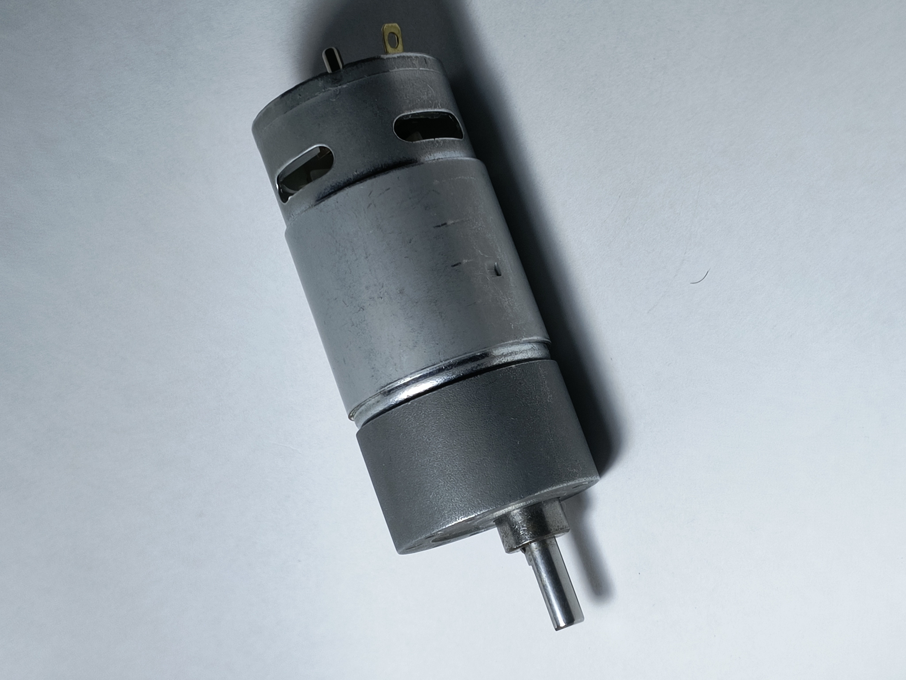
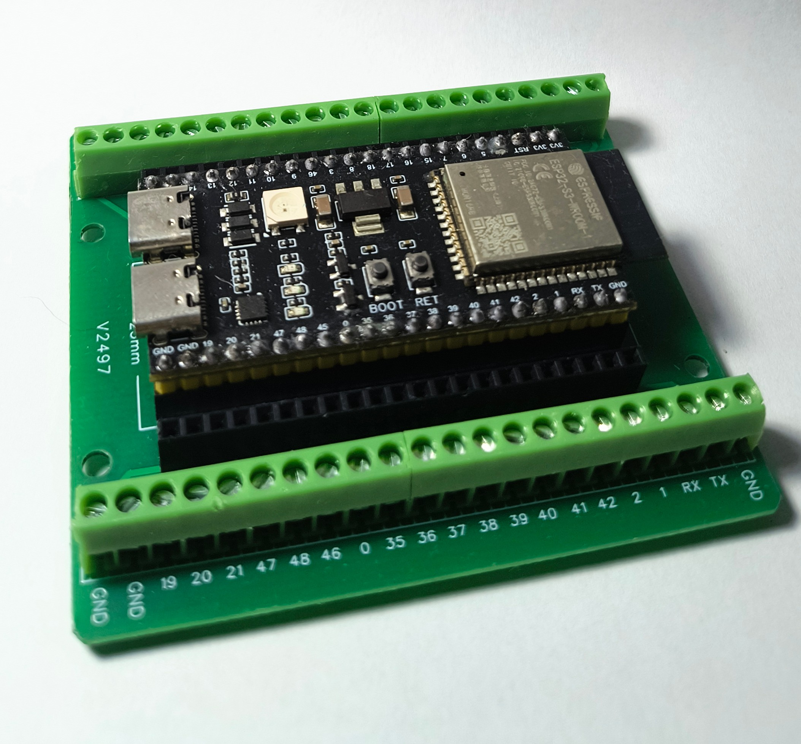
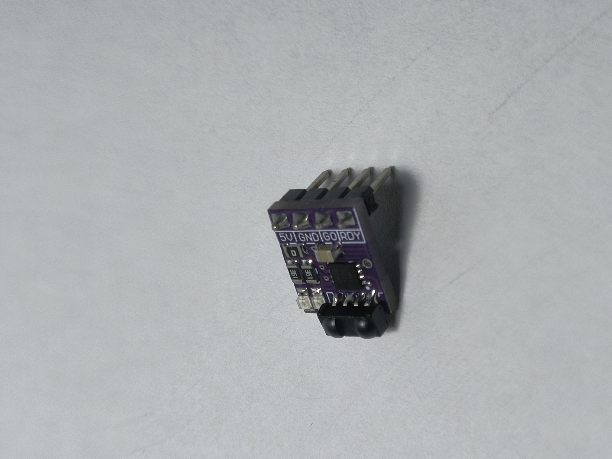
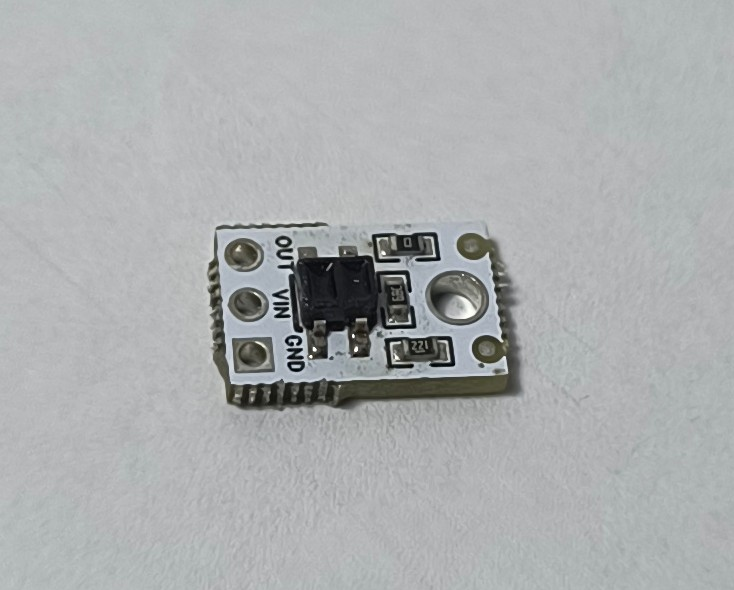
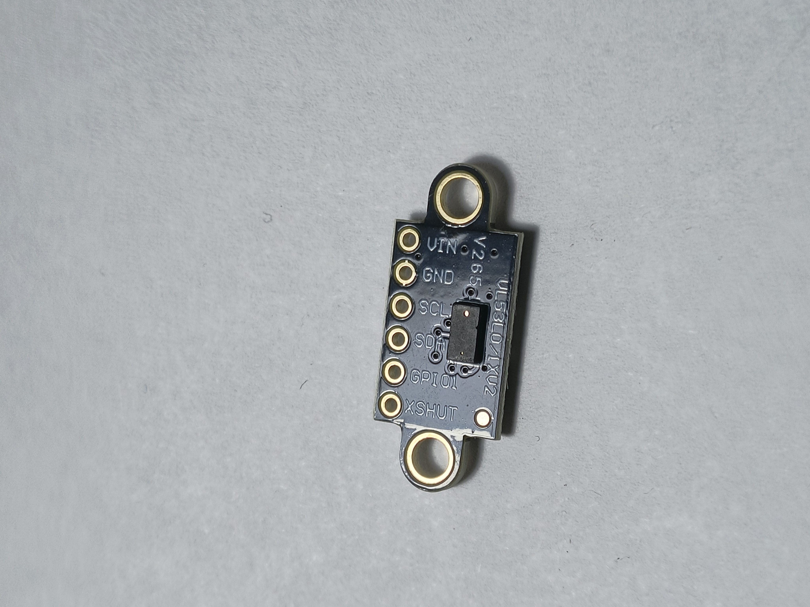
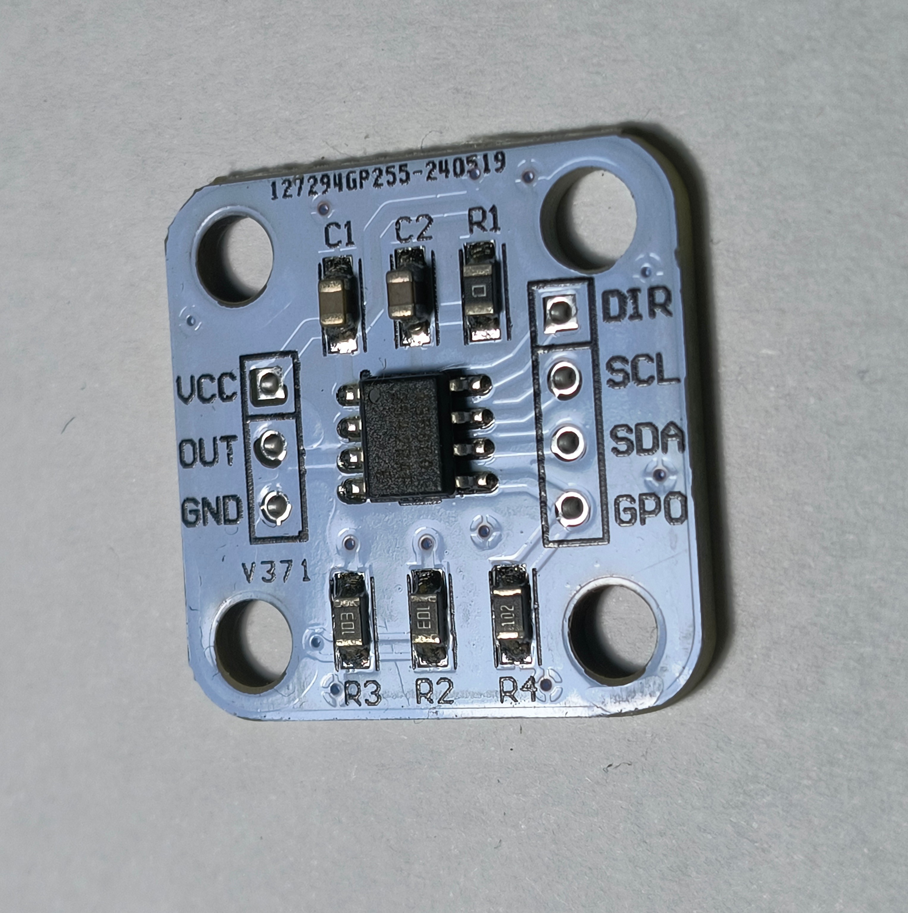

ROBOT SUMO FAT-MAN 456
Categoria de 3kg
Introducción al proyecto
El robot "Sumo Fat-Man 456" es un proyecto de robótica que integra habilidades en diseño CAD usando como herramienta principal el programa SolidWorks para el diseño de piezas desde cero, diseño de electronica usando Wokwi como herramienta para crear el diagrama de conexiones, programación que utiliza el framework de ESP-IDF para crear la logica que controla el robot, habilidades en administración las cuales fueron necesarias en la organización del equipo y en la documentación del proyecto, asi como a su vez se requirio de equipo que se encargara de la fabricación y ensamblaje de las piezas del robot.
Requisitos y restricciones de la competencia de robots sumo
- Peso máximo de 3000g
- Dimenciones máximas de 20cm x 20cm sin límite de altura
- Robot totalmente autónomo sin intervención externa
- Uso obligatorio del módulo RRT para el arranque del robot
- Dohyo color negro de 154cm de diametro y un anillo color blanco de 5cm
- Esta prohíbido el uso de componentes que puedan dañar la pista
- No esta permitido jalar o enganchar al oponente
- Esta prohibido lanzar o catapultar cosas
- Cualquier elemento que adhiera al robot a la pista esta prohíbido
Electrónica
Componentes electrónicos usados
- 2x Motor 20kg*cm 500 rpm E-robots
- 2x Bts7960
- Esp32 S3
- Módulo RRT
- 4x Qtr-1a
- 6x vl53l0x
- Mpu6050
- 2x As5600
- OVONIC 6S LiPo Batería 22.2V 5000mAh 120C
- kit espaciadores metálicos






Conexiones
Diagrama de conexiones hecho en Wokwi & lista de conexión de pines de cada componente

BTS7960 #1
- VCC - 5V
- GND - GND
- RPWM - GPIO12
- LPWM - GPIO13
- R_EN - 5V
- L_EN - 5V
- B(+) - (+)22.2V
- B(-) - (-)22.2V
- M(+) - (+)Motor
- M(-) - (-)Motor
BTS7960 #2
- VCC - 5V
- GND - GND
- RPWM - GPIO40
- LPWM - GPIO41
- R_EN - 5V
- L_EN - 5V
- B(+) - (+)22.2V
- B(-) - (-)22.2V
- M(+) - (+)Motor
- M(-) - (-)Motor